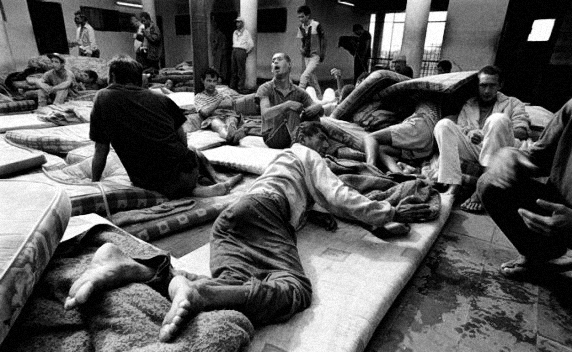

The Historical Context Behind The Scandal
A brief history of psychiatry, madness and lunacy, and how that history influenced and justified the events that occurred at Chelmsford
Madness was a disorder always feared amongst society. Psychiatry, as a discipline, emerged during the late 18th century (Rollin, 2000). There was a prevailing stigmatisation associated with mental illness, for it was deemed as madness resulting from "bad blood", therefore jeopardising the social reputations of families (HETI, 2012). People were considered ill if unable to work and love; character flaws, rather than illness, were the causative agents. Archaic humoural theories were also used to rationalise and explain mental illnesses. Believing that they possessed little capacity to care for themselves, the mentally afflicted were ostracized from society and treated no better than common felons.
The purpose of an asylum was not to treat, but rather to house, isolate and control the mentally handicapped (HETI, 2012). This was usually accomplished through physical restraint (HETI, 2012). Whilst private asylums were highly scrutinized, private institutions were not and could consequently get away with unethical care and treatment (hence, the Chelmsford Scandal). Asylums held a custodial management and were staffed, not by doctors or nurses, but by care assistants, who held no formal training and were typically convicts (Bostock & Campbell 1951; HETI, 2012). Thus, accounts of endemic violence were prevalent (HETI, 2012). There was usually only a sole medical officer present, making therapeutic treatment difficult (Bostock & Campbell 1951). These were the conditions typical of Australia's first mental asylum, the Castle Hill Mental Asylum NSW, founded in 1811. Prior to its opening, lunacy had been diagnosed by a jury of 12 persons (1805), and later by a board of 3 surgeons (1810), with declared lunatics being placed under custodial care in a privatised setting or at a town gaol in Parramatta (Bostock & Campbell 1951).
As the 19th century progressed, medical superintendents gained power in asylums, and a greater emphasis on humane care became predominant (HETI, 2012). Overcrowding was however an issue, resulting in masses of people being sent to gaols to freely mix with common criminals in congested wards (The Road to Recovery, 2013). Accounts from the Castle Hill Mental Asylum reveal that some patients had to sleep in the kitchen due to overcrowding (Bostock & Campbell 1951). In 1867, a Parliamentary Act (Lunacy Act) decreed that mentally ill persons were to be housed in asylums rather than in gaols (HETI, 2012).
Upon the commencement of the 20th century, Australian asylums began to implement structural improvements. The mentally deranged were distinguished from those suffering from cognitive retardation (HETI, 2012). Staff began to receive training from medical superintendents (HETI, 2012). Between 1950-1980, nursing curricula offered a mental health specialisation, establishing stronger duty-of-care and medical knowledge within asylums (HETI, 2012). This emphasised the establishment of a curative focus, whereby group and individual therapies (administrated by nurses) were used to treat patients. Medications were also used as a treatment (HETI, 2012). Physical restraints were used only in the direst of situations, with tranquilisers becoming the preferred restraint method (HETI, 2012). However, asylums were still failing in their duties to effectively cure patients. It was during this period that the Chelmsford Private Hospital began using deep sleep therapy (DST) and electroconvulsion (ECT) as an alternative treatment – a psychiatric hope.
Coma inducement using an injection of sodium bromide was first practised by psychiatrist Dr. Neil Macleod at the beginning of the 20th century (De Young, 2015). Upon waking up from the bromide-induced sleep, Macleod observed that drug dependence subsided in patients whom had previously harboured addictions (Macleod, 1900). Further experimentation revealed that bromide sleep could also be used to potentially cure acute mania, and thus perhaps be extended to ameliorate "all maladies of the nervous system" (Macleod, 1900). This treatment was consequently adopted into asylums, as most of the existing therapies provided relief rather than cures (De Young, 2015). Expanding on this theory, Jakob Klaesi theorized that prolonged deep sleep could be used to diminish symptoms of schizophrenia, thus making patients more open to subsequent treatments, specifically psychotherapy (De Young, 2015). Klaesi induced sleep using morphine, scopolamine, and the administration of somnifen over a ten-day period (De Young, 2015). This method proved to be mostly effective and was thus employed in asylums, including Chelmsford Private Hospital under the administration of Harry Bailey.
Electroconvulsive therapy was first administrated in 1937 by the Italian neurologist Ugo Cerletti and his assistant, Lucino Bini (Endler, 1988). They found that the application of an electroshock treatment, and hence the inducement of seizures, over a series of days could ameliorate the conditions held previously by mentally afflicted persons (Endler, 1988). This therapy was especially used to treat depression, and was consequently introduced into Chelmsford Private Hospital as a concurrent treatment with DST (Department of Psychiatry, University of Michigan Health System, 2015).